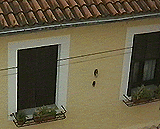
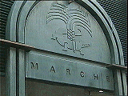

|
公園に出現した巨大なオレンジ？・・・実は公園の中にあったジューススタンド。市名のオランジュ(Orange)にひっかけたジョーク。その場で大きなオレンジをしぼってくれる。ところで、このスタンド、店じまいの時はどうするのだろうか？写真奥の突っ張り棒のようなものは車の・・。（ボンネットをあげた時に支えるあれです。）中央には取っ手らしきものが見える。やはりこのまま上半分を降ろすだけ？ |
こんなところに白いSL？・・・実は街の見どころを一周する観光列車“プチ・トラン”。とはいえもちろんレールはない。客車を数台引き連れてゆっくりと走る。アヴィニョンの教皇庁の前や、アルルのツーリストインフォーメーション前でもみかけた。南仏の観光協会か商工会議所がつくったんだろうか？どういう経営形態になっているのかは不明。この写真をとったところはオランジュの市営駐車場の中。ちゃんと汽笛を鳴らして入ってきた。 | |
|  | 民家の壁にくっついている影の正体は？そう、南仏のシンボル、セミです。陶器製で、大きさはいろいろ。わたし達も土産物屋で手のひらサイズのものを購入。 |
ニームの市章はなんとワニ。街中でワニ探しをしてみました。
 路上のプレート |
 市場の看板 |
これもどこかの看板 |